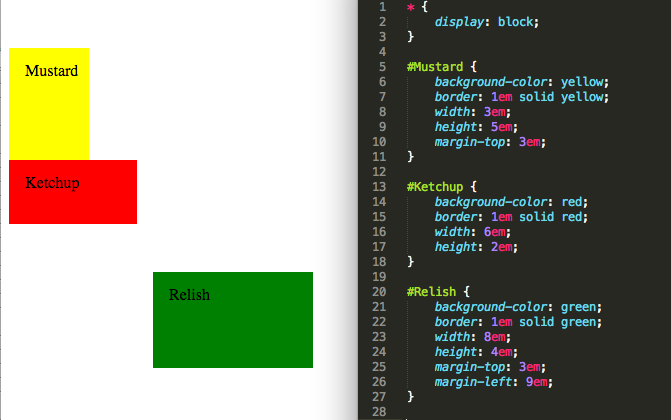
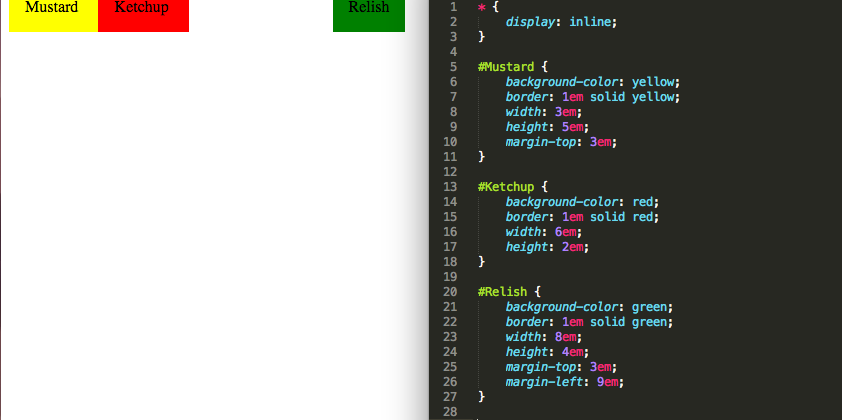
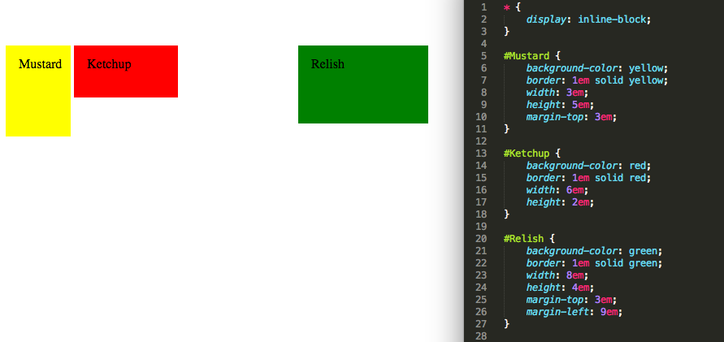

In CSS formatting, changing the display element changes how an object is displayed on the screen. Here is the correct CSS syntax for using display:
.example {
display: value;
}
Today I will explain the differences between block, inline and inline-block display values.
The "physical" measurements of block objects are changeable. In the example below, there are 3 block value elements: Mustard, Ketchup and Relish. These 3 elements are all different sizes; they all have different height and width values.
The location of block objects is also changeable. By default, block objects stack themselves in a verticle line, like Mustard and Ketchup in the example below. Relish has been moved down and to the right using margin-top and margin-left .
Inline objects are displayed in a horizontal line. Inline objects do not have physical properties in the same way that block objects do. An inline object cannot have a defined height or width ; it will become just big enough to hold its contents. In terms of location, inline objects cannot be moved vertically, only horizontally. In the below example, all of the code is exactly the same as the first example, except that the display value has been changed to inline. Without changing anything else, the condiments have all become a smaller size and moved into a horizontal line.
Inline-Block objects have similarities to both inline objects and block objects . In the example below, I have again only changed the display value to inline-block . Like blocks, inline-blocks can also have "physical" attributes; you can set the height and width. Notice in the example below that the three condiments are different sizes.
Like inline objects, inline-block objects are in a horizontal line. Also similarly to inline objects, you can move objects horizontally but there are limitation on the vertical movement. Notice in the example below that the three condiments are in a horizontal line, starting from vertical position of Mustard.
